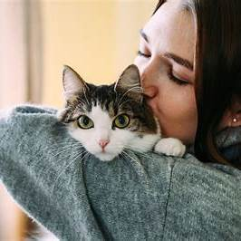
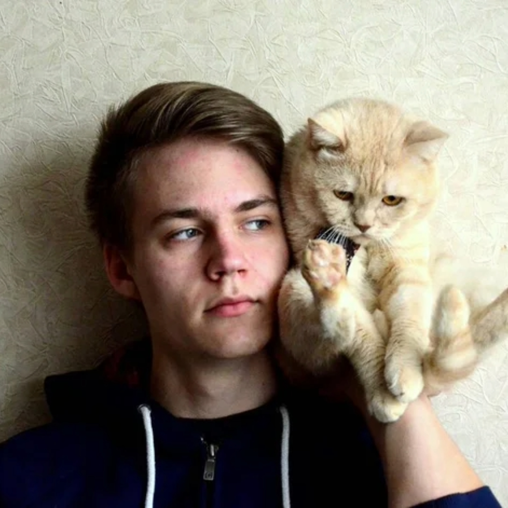

About us
We are Minki's Shelter, founded in 2025 after Minki passed away, our beloved cat who touched the hearts of everyone around him. In honor of his spirit and the love he gave us, we created this sanctuary to continue his legacy by offering care, support, and hope to cats in need. Our mission is to provide a safe haven for cats who have nowhere else to turn, just as Minki did for so many during his life.
"Adopting Luna from Minki's Shelter was the best decision. They guided me through the process, and now Luna is a beloved part of my family. I'm so grateful for the care and love Minki's Shelter provides!"

— Carla, 28
"As a supporter of Minki's Shelter, I'm proud to contribute to their incredible work. The dedication they show to rescuing and finding loving homes for cats is truly inspiring. It’s a privilege to help a cause that makes such a positive impact on our community."

— James Whitaker, CEO of Whitaker Enterprises
"Supporting Minki's Shelter has been one of the most fulfilling decisions I've made. Their compassion and tireless efforts to save and rehome cats are nothing short of remarkable. Every cat deserves love, and they make it happen." 
— Emily, 24 , Veterinarian
"Minki's Shelter is a sanctuary of hope for so many cats in need. Their dedication to animal welfare and finding the right homes for these wonderful companions is extraordinary. I'm honored to support their mission." 
— Daniel, 23 , Animal Rights Advocate